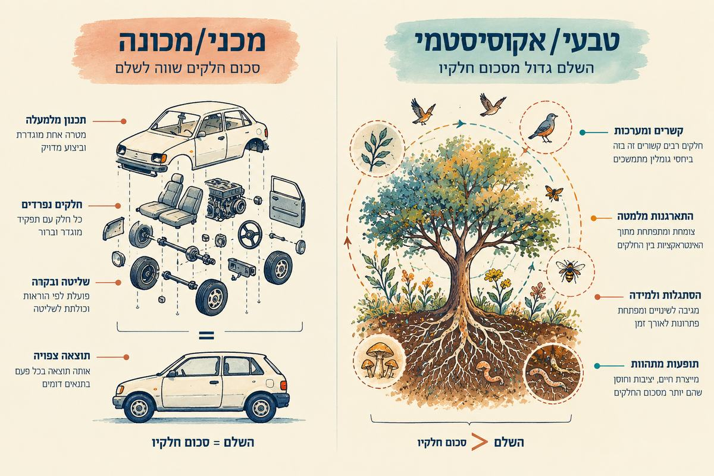
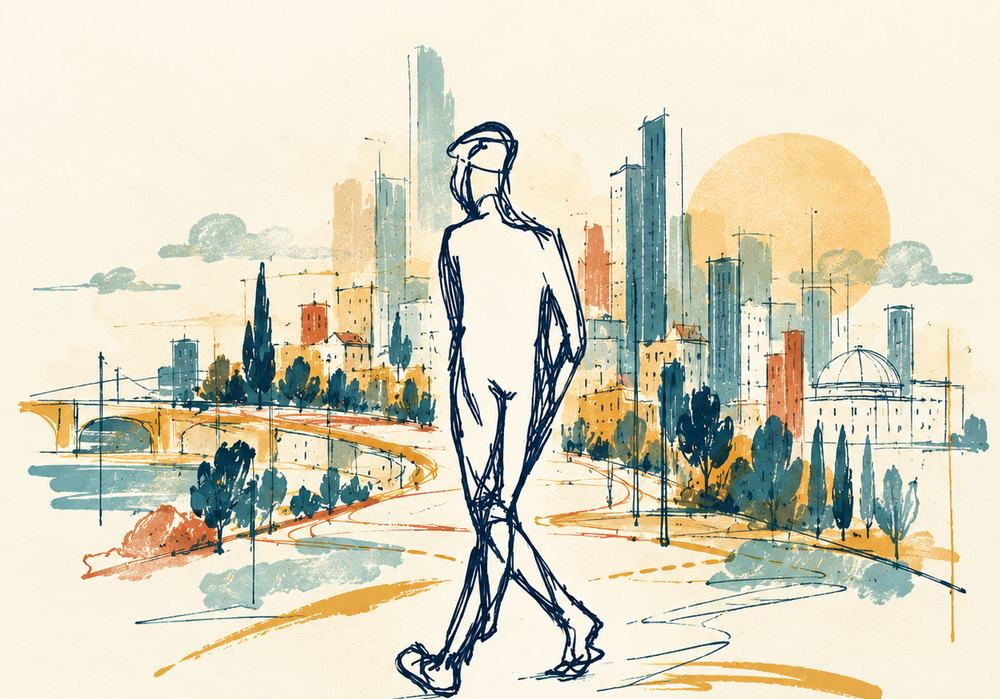

טיוטה לבדיקה. העמוד הראשי של האתר לא השתנה. הכפתור "סימוני מקור" מראה מה מתועד, מה החלטה שלך ומה הצעת ניסוח שלי. הטקסט כאן בעברית בלבד, והאנגלית תיכתב אחרי אישור.
מתועדפרקטיקה מתפתחת
להניח את המפה
הניסוח שלך, מתפתחאנחנו לא הולכים לאיבוד רק כדי לאבד את הדרך. אנחנו משחררים לזמן מה את הצורך לדעת, לשלוט ולתכנן הכול מראש, כדי לפגוש את מה שלא יכולנו לצפות.
הצעת ניסוחבדרך נעים בין סדר לאי־סדר, בלי להחליט שאחד מהם הוא התשובה, ושמים לב למה שנמצא כאן: אנשים, מקום, והקשרים שביניהם. זו פרקטיקה שממשיכה להתפתח, ולא תאוריה מוכחת.
איור: ליאל
מתועדיוצאים מא׳ אל ב׳, ומה שמשמעותי הוא לעיתים ג׳. השוטטות יוצרת תנאים לגלות את ג׳. זו לא הבטחה, וזה גם לא ויתור על תכנון.
המבט האקוסיסטמי
חלק מרשת חיה
מתוך ההנחיה שלךאנחנו לא יחידים נפרדים בעולם של חפצים נפרדים ומשאבים בלי סוף. אנחנו חלק מרשת חיה של קשרים: תלויים בה, תורמים לה, ומושפעים מהתנאים שמקיימים אותה. בתמונת EGO האדם עומד בראש פירמידה. בתמונת ECO הוא אחד מתוך רשת, תלוי בה כמו שהיא תלויה בו.

כשהשלם גדול מסכום חלקיו
הצעת ניסוחמכונה אפשר להבין לרוב דרך החלקים שלה והאופן שבו הם מתחברים. ליצור חי יש איכויות שצומחות מהקשרים בין החלקים, ואי אפשר להסביר אותן רק בחיבור שלהם. לזה קוראים התהוות וסינרגיה. אין כאן טענה שמכונות לא חשובות, וגם לא שכל מערכת חיה יוצרת סינרגיה מעצמה. השוטטות שמה לב לרגעים שבהם המכלול מפתיע.
מתועדבמעבר הזה, מתפיסה מכניסטית לתפיסה אקוסיסטמית, נפתחים שלושת המפגשים הראשונים בקורסים של תומר באוניברסיטה. זה משל ולא טענה מדעית.

בין כאוס לסדר
הצעת ניסוחעל הרצף שמקריסה ועד שליטה יש רגעים של כאוס ורגעים של סדר. ב־Art of Hosting קוראים למרחב שביניהם כאורדי (chaordic), ושם יכולים לצמוח חידוש ויצירה. שוטטות היא דרך לשהות שם לזמן מה: לצאת מהשליטה בלי ליפול לקריסה, ובלי למהר לחזור לסדר הידוע.
תנועת השיטה
שבע תנועות, ברצף חי וחוזר
החלטה של תומר, 28.10זה לא נוהל לינארי קשיח. התנועות יכולות להשתנות בצורתן ובאורכן לפי ההקשר, והחגיגה פותחת חזרה אל הערך.
- ערךמעניק כיוון.
- שחרורמשהה את הצורך לשלוט ולמצוא תשובה מיד.
- שוטטותפותחת מפגש עם העולם.
- קשבלעצמי, לאחר, למרחב, ולמה שביניהם.
- הבחנהמזהה קשר או אפשרות.
- יצירהנותנת ביטוי למה שהתגלה.
- חגיגהרפלקציה שנשענת על הכרת תודה.
מתועדמהחגיגה חוזרים אל הערך, בהבנה שהשתנתה.
סדנאות ושיתופי פעולה
פורמטים שכבר קיימים
"הזמנה ללכת לאיבוד"
מתועדארבעה שלבים: נחשף להשראה, נצא לשוטט, נחזור לספר, ניצור.
"סיפור המקום" עם עדשות 5R
מתועדREFEEL · REVIEW · RESPECT · RECONNECT · RECREATE
שוטטות קצרה בתוך מפגש קיים
מתועדלמשל "תמונה אחת שמספרת משהו עליי": צילום בדרך לארוחה, ואחריו מעגל שיתוף.
Getting Lost Workshop
לצאת לשוטט
הצעת ניסוחהדמות שציירה ליאל מלווה את השוטטות לפחות מאז ההזמנות של 2015. היא לא יודעת לאן היא הולכת, וזה בסדר. אפשר לצאת לבד עם המשוטט, או להזמין סדנה לקבוצה.

עמוד העומק, תצוגה מקדימה. איור חמשת העקרונות עוד לא הגיע, וההנחה החמישית תושלם מהחוברת. במקומות האלה יש סימון.
המבט האקוסיסטמי
לראות מקום וחיים דרך הקשרים שביניהם
מתוך ההנחיה שלךאנחנו לא יחידים נפרדים בעולם של חפצים נפרדים ומשאבים בלי סוף. אנחנו חלק מרשת חיה של קשרים, תלויים בה, תורמים לה ומושפעים מהתנאים שמקיימים אותה. מכאן השאלה משתנה: לא רק איך להשיג עוד, אלא איך לחיות ולפעול בדרך שמכירה בתלות ההדדית ושומרת על התנאים לחיים.
מ־EGO ל־ECO
הצעת ניסוחבתמונת EGO האדם עומד בראש פירמידה, וכל השאר מסודר מתחתיו. בתמונת ECO האדם הוא אחד מתוך רשת של יצורים וקשרים. זה איור מושגי שמציע דרך אחרת להסתכל, ולא תיאור מדעי של הטבע.
מכונה ויצור חי
הצעת ניסוחמכונה אפשר לפרק, לתקן ולצפות. ביצור חי צומחות מהקשרים בין החלקים איכויות חדשות: התארגנות מלמטה, הסתגלות, תופעות מתהוות. סינרגיה היא אפשרות, ולא הבטחה.
מקור חיצוניההבחנה בין מכונה למערכת חיה מופיעה גם בעמוד 8 בחוברת אמנות האירוח של מרכז השל.
שש הנחות היסוד
Art of Hosting מנסחת שש הנחות יסוד על מערכות חיות ועל שיחה. הן מובאות כאן כלשונן, מתוך החוברת בעברית.
- דרושים פתרונות חדשים
- פתרונות חדשים צומחים בין כאוס לסדר
- שיחות משמעותיות מובילות לשינוי
- כל ארגון הוא מערכת חיה
- הפתרונות הטובים ביותר לא נמצאים אצל אנשים פרטיים, אלא בשדה… להשלמה מהחוברת
- אנו חיים במציאות של ניגודים משלימים
מתוך: חוברת אמנות האירוח, מרכז השל, עמ׳ 7. שם מדויק ושנה לבדיקה
ההנחות של Art of Hosting מתארות מערכות חיות. מתוכן, ומתוך המבט האקוסיסטמי, זיקקנו חמישה עקרונות לחיים. הם שלנו ולא של Art of Hosting, והם לא מחליפים את שבע התנועות.
חמישה עקרונות מתוך מבט אקוסיסטמי
החלטה של תומראלה לא צווים. הם כיוונים לקשב, לשיקול דעת ולפעולה בעולם חי ומקושר.
הוא עוד לא הגיע.
מידת האמצע
לזהות את המידה הנכונה, בלי לצבור, לצרוך או לקחת יותר ממה שצריך. זו לא בינוניות ולא פשרה אוטומטית, אלא שיקול דעת בכל מצב, מתוך התלות שלנו ברשת החיים והתרומה שלנו לה.
לבדיקהשורשים: תורת המידה האמצעית של אריסטו, והדרך הממוצעת של הרמב״ם. הפרשנות האקוסיסטמית היא שלנו.
חכמת רבים
אף אחד לא רואה את כל התמונה. כשאנשים שונים משתפים במה שהם יודעים, יכולה לצמוח הבנה שאף אחד מהם לא היה מגיע אליה לבד.
מגוון זה חיים
מגוון של אנשים, מינים, נקודות מבט ודרכי ידיעה נותן למערכת חיה עושר, יכולת הסתגלות ואפשרויות. זה לא רק משהו שצריך לסבול.
הקשבה זו חכמה
להקשיב זה להכיר בכך שנקודת המבט שלנו חלקית. כשמקשיבים לאחרים, למקום, לטבע ולמה שעוד לא מבינים, לומדים את מה שלא נראה מנקודת מבט אחת.
הוקרת היש
לפני שמחפשים עוד, לשים לב למה שכבר כאן ולהוקיר אותו: אנשים, קשרים, מקומות והזדמנויות. הכרת תודה מאזנת את הלחץ לצבור עוד ועוד.
המרחב הכאורדי והשוטטות
הצעת ניסוחההנחה השנייה של Art of Hosting אומרת שפתרונות חדשים צומחים בין כאוס לסדר. השוטטות מתרגמת את זה לצעד: לשחרר לזמן מה את השליטה, להישאר בתוך אי הוודאות בלי לקרוס, ולשים לב למה שמתחיל לצמוח שם.
ומכאן, לצאת לדרך
העקרונות יכולים להזין את השוטטות, אבל השיטה עצמה היא שבע התנועות.